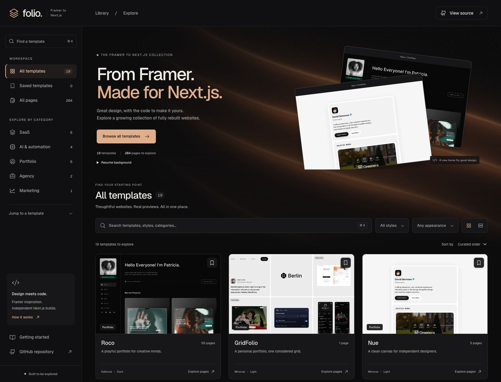
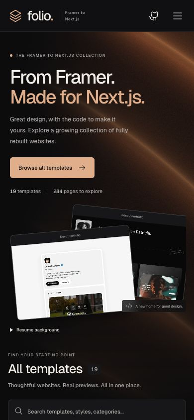
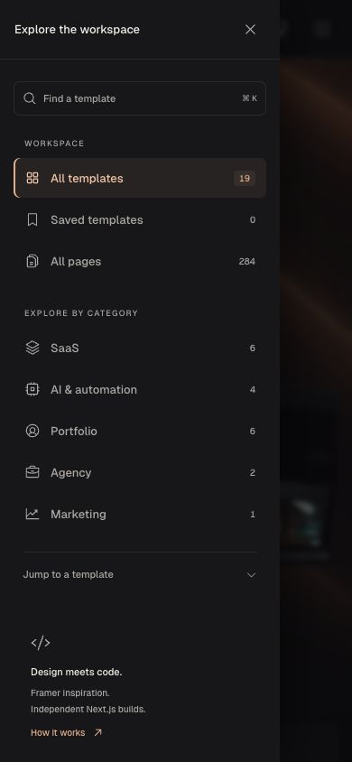

<!doctype html><html lang="en"><meta charset="utf-8"><title>Folio portfolio artwork</title>
<style>
@font-face{font-family:Geist;src:url('./geist.woff2')}*{box-sizing:border-box}html,body{margin:0;background:#101012;color:#f0ece6;font-family:Geist,Arial,sans-serif}body{overflow:hidden}.board{position:relative;overflow:hidden;background:radial-gradient(ellipse at 88% 12%,#8e542d55,transparent 58%),radial-gradient(ellipse at 4% 94%,#392114,transparent 50%),#101012}.board:before{content:"";position:absolute;inset:0;background:repeating-linear-gradient(132deg,transparent 0 140px,#d39a6512 146px,transparent 154px 280px);pointer-events:none}.wordmark{font-size:50px;font-weight:600;letter-spacing:-3px}.wordmark span{color:#e1ae8c}.eyebrow{font-size:16px;text-transform:uppercase;letter-spacing:3px;color:#c3a58e}.title{font-size:84px;line-height:1.05;letter-spacing:-5px;font-weight:500;margin:0}.title span{color:#e1ae8c}.caption{font-size:20px;color:#b5aca5;line-height:1.5}.window{position:absolute;overflow:hidden;border-radius:16px;border:1px solid #ffffff35;box-shadow:0 40px 100px #0009;background:#0c0c0d}.window img{display:block;width:100%;height:auto}.phone{position:absolute;overflow:hidden;border:1px solid #ffffff30;border-radius:28px;box-shadow:0 35px 75px #0008;background:#0c0c0d}.phone img{display:block;width:100%;height:auto}.label{position:absolute;bottom:40px;left:64px;right:64px;display:flex;justify-content:space-between;border-top:1px solid #ffffff16;padding-top:20px;font-size:14px;color:#b8a798;letter-spacing:.4px}
.thumbnail{width:1200px;height:1200px}.thumbnail .wordmark{position:absolute;top:58px;left:66px}.thumbnail .eyebrow{position:absolute;right:64px;top:83px;font-size:14px}.thumbnail .title{position:absolute;top:161px;left:66px;font-size:91px;letter-spacing:-5px}.thumbnail .caption{position:absolute;left:70px;top:375px}.thumbnail .window{width:1110px;left:98px;top:502px;transform:rotate(-5deg);transform-origin:center}.thumbnail:after{content:"";position:absolute;inset:auto 0 0;height:110px;background:linear-gradient(transparent,#10101288)}
.hero{width:1800px;height:1000px}.hero .wordmark{position:absolute;left:106px;top:94px;font-size:58px}.hero .eyebrow{position:absolute;left:109px;top:270px;font-size:15px}.hero .title{position:absolute;left:101px;top:318px;font-size:79px;line-height:1.1}.hero .caption{position:absolute;left:107px;top:534px;font-size:23px;max-width:490px}.hero .window{width:1080px;left:730px;top:147px;transform:rotate(-4deg)}.hero .phone{width:224px;left:657px;top:548px;transform:rotate(4deg);border-radius:20px}.hero .label{left:107px;right:auto;width:430px;bottom:113px;font-size:17px}
.mobile{width:1440px;height:1100px}.mobile .eyebrow{position:absolute;left:68px;top:66px}.mobile .title{position:absolute;left:63px;top:112px;font-size:60px;letter-spacing:-3px}.mobile .caption{position:absolute;left:68px;top:259px;width:280px;font-size:22px}.mobile .phone{width:352px;top:161px}.mobile .phone-a{left:498px;transform:rotate(-3deg)}.mobile .phone-b{left:933px;transform:rotate(3deg)}.mobile .wordmark{position:absolute;left:65px;bottom:115px}.mobile .label{left:497px;bottom:88px;right:156px}
</style>
<div id="board"></div>
<script>
const view=new URLSearchParams(location.search).get('view')||'thumbnail';
const shots={thumbnail:`<div class="wordmark">folio<span>.</span></div><div class="eyebrow">Framer / Next.js</div><h1 class="title">Good design.<br><span>A new home.</span></h1><p class="caption">19 templates. 284 pages. One place to explore.</p><div class="window"></div>`,hero:`<div class="wordmark">folio<span>.</span></div><div class="eyebrow">The Framer to Next.js collection</div><h1 class="title">From Framer.<br><span>Made for Next.js.</span></h1><p class="caption">A growing collection of rebuilt websites,<br>with the code to make them yours.</p><div class="window"></div><div class="phone"></div><div class="label"><span>19 independent templates</span><span>284 content pages</span></div>`,mobile:`<div class="eyebrow">Built for the smaller screen</div><h1 class="title">Same library.<br><span>More room.</span></h1><p class="caption">Browse the collection.<br>Keep every destination<br>within reach.</p><div class="phone phone-a"></div><div class="phone phone-b"></div><div class="wordmark">folio<span>.</span></div><div class="label"><span>Mobile library</span><span>Complete navigation</span></div>`};
document.getElementById('board').className='board '+(shots[view]?view:'thumbnail');document.getElementById('board').innerHTML=shots[view]||shots.thumbnail;
</script></html>
